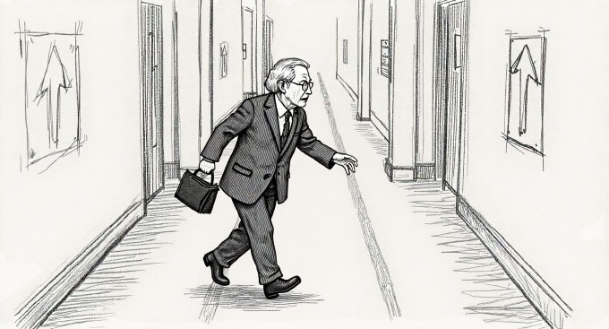

開発履歴Project Milestones开发历程개발 이력Hitos del ProyectoJalons du Projet
ニュースUpdates最新动态업데이트NoticiasActualités
本ポータルサイト公開Portal Site Launch门户网站正式上线포털 사이트 공개Lanzamiento del PortalLancement du Portail
「学術的威厳」と「圧倒的UI」を融合したサイバー・ブルータリズムデザインのポータルを開設。 Launched a cyber-brutalist portal merging academic gravitas with overwhelming visual impact. 开设了融合"学术威严"与"压倒性UI"的赛博粗野主义设计门户网站。 "학술적 위엄"과 "압도적 UI"를 융합한 사이버 브루탈리즘 디자인의 포털을 개설. Se abrió un portal de diseño cyber-brutalista que fusiona gravitas académica con impacto visual abrumador. Ouverture d'un portail cyber-brutaliste fusionnant la rigueur académique et un impact visuel écrasant.
同調行動モデルの高度化Advanced Herd Behavior Modeling从众行为模型高度化동조 행동 모델 고도화Modelado Avanzado de Comportamiento de ManadaModélisation Avancée du Comportement de Meute
Social Force Model の拡張として、群集心理によるパニック伝染と危険な同調行動を正確に表現するシミュレーションに到達。 Extended the Social Force Model to accurately reproduce panic contagion and dangerous herd behavior in crowd psychology. 作为Social Force Model的扩展，实现了精确再现群体心理引发的恐慌传染和危险从众行为的模拟。 Social Force Model의 확장으로서, 군중 심리에 의한 패닉 전염과 위험한 동조 행동을 정확히 재현하는 시뮬레이션에 도달. Como extensión del Social Force Model, se logró reproducir con precisión el contagio de pánico y el peligroso comportamiento de manada en psicología de masas. En extension du Social Force Model, on a atteint une simulation reproduisant précisément la contagion de panique et les comportements grégaires dangereux.
89,000人のマルチエージェント化成功89,000-Agent Simulation Achieved89,000人多智能体化成功89,000명 멀티에이전트화 성공Simulación de 89,000 Agentes LogradaSimulation de 89 000 Agents Réussie
鎌倉の想定避難者である89,000もの独立したエージェントをブラウザ上で並列計算させることに成功。 Successfully achieved parallel computation of 89,000 independent agents — Kamakura's estimated evacuation population — rendered live in the browser. 成功在浏览器上实现了对89,000名独立智能体（镰仓假定避难人数）的并列计算。 가마쿠라의 예상 대피 인원인 89,000명의 독립 에이전트를 브라우저 상에서 병렬 계산하는 데 성공. Se logró la computación paralela de 89,000 agentes independientes — la población estimada de evacuación de Kamakura — renderizados en vivo en el navegador. Réalisation du calcul parallèle de 89 000 agents indépendants — la population d'évacuation estimée de Kamakura — rendus en direct dans le navigateur.

プロジェクト始動。計算機の中の鎌倉の誕生。Project Launch. Kamakura Born Inside a Computer.项目启动。计算机中的镰仓诞生。프로젝트 시작. 컴퓨터 속 가마쿠라 탄생.Inicio del Proyecto. Kamakura Nace en un Ordenador.Lancement du Projet. Kamakura Naît dans un Ordinateur.
「なぜ次の大地震での鎌倉は救われないのか？」という個人的な切迫感から、オープンなシミュレーション構築を決意。 Driven by the urgent personal question "Why won't Kamakura be saved in the next major earthquake?" — committed to building an open simulation. 出于"为何下一次大地震时镰仓无法得救？"这一个人紧迫感，决心构建开放的模拟器。 "다음 대지진에서 가마쿠라는 왜 구해지지 않는가?"라는 개인적 절박감으로부터, 오픈 시뮬레이션 구축을 결의. Impulsado por la urgente pregunta personal "¿Por qué Kamakura no se salvará en el próximo gran terremoto?" — comprometido a construir una simulación abierta. Poussé par la question personnelle urgente "Pourquoi Kamakura ne sera-t-elle pas sauvée lors du prochain grand séisme ?" — engagement à construire une simulation ouverte.